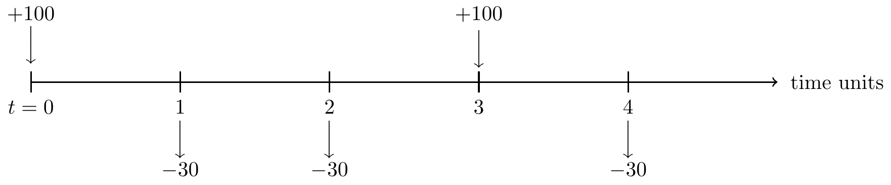
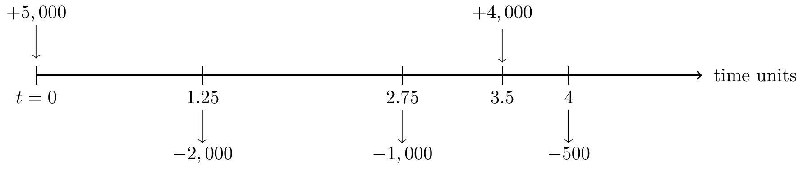

Chapter 3 Tutorials
3.1 Tutorial 1
Calculate the following accumulation:
Accumulate $5,000 for 4 years at 7.5% per annum effective.
Accumulate $800 for 2.7 years at 3% per quarter-year effective.
Accumulate $10,000 for 27 months at 4.25% per half-year effective.
Calculate the present values on 1 January 2015 of the following payments at the given rates of interest:
$1,000 on 1 January 2016, at 7.5% per annum effective.
$100 on 1 October 2016, at 3% per quarter-year effective.
$10,000 on 1 April 2016, at 4.25% per half-year effective.
If the effective rate of interest is 4% per annum, calculate the effective rate of interest per month?
If the effective rate of interest is 6.5% per half-year, calculate the effective rate of interest per quarter-year?
The effective rate of interest per annum was 4% during 2015, 5% during 2016 and 6% thereafter.
Calculate the accumulation of $500 from 1 January 2015 to 1 January 2018.
Calculate the accumulation of $2000 from 1 April 2015 to 1 October 2017.
Calculate the accumulation factor from 1 January 2015 to 1 January 2018.
You deposit $ 3000 to an account that earn 2.5% compounded annually. How much will you have in three years?
A person borrows a sum of $5,000 and agrees to pay this back at the end of 1 year with interest calculated at an effective rate of 10% per annum. Calculate the amount to be repaid for the loan.
You want to have $1000 in 2 years and $2000 in 4 years. How much should you deposit now into an account earning the effective rate of 5.75% semiannually?
Katy deposits 100 into a saving account which pays interest at \(i\) per quarter effective.
At the same time, Taylor deposits 500 into a different saving account which pays a simple interest at an annual rate of \(i\).
During the last 3 months of the 4th year, they both earn the same amount of interest. Calculate \(i\).
An ordinary annuity is a series of equal payments made at the end of consecutive periods over a fixed length of time. Draw a timeline for the following annuity having cashflow of 1 unit at the end of each of the next n time units.
Draw a timeline to illustrate this insurance benefit: Whole Life Insurance - payable immediately on death - has following conditions:
death benefit (sum insured) of 1
payable immediately on the death
of an individual currently aged x
for death occurring any time in the future.
(Excel) It is a good exercise to check whether the Excel worksheet you have developed so far for calculating the present value and future value can be applied to the questions in this Tutorial. What would you do to improve the Excel worksheet that can be applied to a more general scenario?
3.2 Tutorial 2
Starting at 1 January 2015, the effective rate of interest per annum was 3% per quarter-year for 9 months, 4% per half-year for 15 months and and 2% per month thereafter.
Calculate the accumulation factor from 1 January 2015 to 1 January 2018.
Calculate the accumulation of $5,000 from 1 July 2015 to 1 October 2017.
Calculate the accumulation of $100 from 1 March 2016 to 1 August 2018.
Calculate the present value at 1 January 2015 of $ 25,000 receivable on 1 July 2016.
Calculate the present value at 1 April 2015 of $ 8,000 receivable on 1 October 2017.
Calculate the discount factor from 1 July 2015 to 1 October 2016.
The effective rate of interest is 7.25% per time unit. Cashflows are shown in the following time line.
Calculate the accumulation at time time t = 4 units of these cashflows.
Calculate the accumulation at time time t = 8 units of these cashflows.
Calculate the present value at time time t = 0 units of these cashflows.

The effective rate of interest is 6% per time unit. Cashflows are shown in the following time line.
Calculate the accumulation at time time t = 5 units of these cashflows.
Calculate the value at time time t = 2 units of these cashflows.
Calculate the present value at time time t = 0 units of these cashflows.

The effective rate of interest per annum was 4% during 2015, 3% per half-year until 1 October 2017 and 1.5% per month thereafter. Cashflows are shown in the following time line.
Calculate the accumulation on 1/1/2019 of these cashflows.
Calculate the present value on 1/1/2015 of these cashflows.
Calculate the value at time time 1/7/2017 of these cashflows.
- (Excel) It is a good exercise to check whether the Excel worksheet you have developed so far for calculating the present value and future value can be applied to the questions in this Tutorial. What would you do to improve the Excel worksheet for a more general scenario?
3.3 Tutorial 3
Calculate the present value now of an annuity payable monthly in advance. The annual amount of the annuity will be $ 2,400 for the first 10 years and $ 3,600 for the next 15 years, after which payment will cease. Assume that the effective rate of interest is 2% per annum.
Assume that the effective rate of interest will be 3% for 5 years from now, 4% for the next 5 years and 5% thereafter. Calculate the following values:
The present value of an annuity of $ 1,000 per annum, payable in arrear for 15 years.
The present value of an annuity due of $ 500 per annum, payable at the beginning of the year for 20 years.
The accumulation value of an increasing annuity payable yearly in arrear for 30 years. The first annual payment is $ 100, and payments will be increase by $ 100 each year.
The accumulation value of an increasing annuity payable yearly in advance for 18 years. The first annual payment is $ 1,000, and payments will be increase by 2% each year (compound).
The present value of an annuity of $ 200, payable in arrear for 10 years and deferred for 3 years.
You borrow $ 240,000 from a bank to be repaid by the end of 5 years. Assume that the interest rate is 4% per annum. Consider the following four possible options for the loan to be repaid.
Calculate the amount of the repayments to repay if you choose to repay the loan as late as possible.
You may choose to repay interest only during the 5 years term of loan and repay the capital at the end of the term. Calculate interest to be repaid and draw the timeline to illustrate the cashflows for the repayment of the loan.
Calculate the amount X of level instalments to repay the loan which will be paid at the end of each year for 5 years and draw the timeline to illustrate the cashflows for the repayment of the loan.
Calculate the amount Y of level instalments to repay the loan which will be paid at the end of each month for 5 years and draw the timeline to illustrate the cashflows for the repayment of the loan. Instalment is a sum of money due as one of several equal payments for something, spread over an agreed period of time.
A person now age 30 has received a pension from a company. When he retires at age 60, he will be paid on each birthday from the 60 to the 85th inclusive. The first annual payment will be half of his salary when he retires, and payments will then increase by 2% compounding each year. Currently, he receive a salary of $ 20,000 and will increase by 3% each year compounding in line with inflation. Assume that the effective rate of interest will be 4% for the next 20 years and 5% thereafter. Calculate the present value now of this pension.
(Excel) Use Excel worksheet you have developed so far to calculate the results from the questions in this Tutorial.
3.4 Tutorial 4
Show that the following series of cashflows are equivalent given that an interest rate is 4% per annum effective.
One single payment of amount 14,802.44 at year 10.
a level annuity of 400 payable yearly in arrear for the next 10 years plus a lump sum of 10,000.
a level annuity of 1,232.91 payable yearly in arrear for the next 10 years.
You invest in a project which requires you to pay 2,000 and receive back 300 at the end of each of the next 8 years. Calculate the yield of this investment. ANS = 4.2394551%
You pay a price of 5,000 for an investment that will repay you 600 per annum payable half-yearly in arrear for the next 12 years. Calculate the yield of this investment. ANS = 3.1491266%
An investor pays 100,000 in order to receive 20,000 back at the end of the first 3 years and 25,000 back at the end in the next 4 years. Calculate the yield of this investment. ANS = 12.6209232%
You invest in a project which requires you to pay 500,000 at the start of each of the calendar years 2018, 2019 and 2020. The project is expected to return profits of 400,000 for 6 years a the end of each calendar year 2024 to 2029 inclusive. Calculate the yield of this investment. ANS = 5.7285486%
(Modified from CT1 2012 IFoA Exam)
An investor is considering two projects, Project A and Project B. Project A involves the investment of 2,000,000 in a retail outlet. Rent is received quarterly in arrear for 25 years, at an initial rate of 100,000 per annum. It is assumed that the rent will increase at a rate of 5% per annum compound, but with increases taking place every five years. Maintenance and other expenses are incurred quarterly in arrear, at a rate of 12,000 per annum. The retail outlet reverts to its original owner after 25 years for no payment.
Project B involves the purchase of an office building for 1,000,000. The rent is to be received quarterly in advance at an initial rate of 85,000 per annum. It is assumed that the rent will increase to 90,000 per annum after 20 years. There are no maintenance or other expenses. After 25 years the property reverts to its original owner for no payment.
Calculate the annual effective internal rate of return for both Projects A and B. Which project is preferable?
(Excel) Use Excel worksheet you have developed to calculate the results from the questions in this Tutorial.
3.5 Tutorial 5
You borrow 30,000 for a term of 6 months to be repaid in arrear by level monthly instalments. The rate of interest will be 4% pa effective.
Calculate the monthly repayment.
Construct the complete loan schedule
A loan of 800,000 is repayable by equal monthly repayments for 10 years, with interest rate payable at 6.5% pa effective.
Calculate the amount of each monthly payment.
Calculate the interest and capital contents of the 96th repayment.
An investor takes out a loan of 100,000 from a bank to be repaid by level annual instalments in arrear over 12 years where the bank charges an effective annual rate of interest of 7%. Immediately after the 6th repayment has been made, the investor may
extend the term of the loan by extra 2 year, or
miss the next two repayments.
Calculate the revised repayment amount in each case.
Suppose the bank allows the investor to miss the next two repayments but the capital outstanding will be charged interest at 10% pa effective while the investor is not making repayments. Calculate the revised repayment.
Suppose in Question 3.2 that the investor will miss the next two repayment and extend the term of the loan by extra 4 years. Calculate the revised repayment.
An investor borrows 50,000 for a term of 12 years. The rate of interest will be 4% pa effective for the first 6 years and 5% pa effective thereafter. The loan will be repaid level annual repayments for the first 6 years, and then increasing to twice the origin level for the last 6 years. Calculate the annual repayment.
An investor borrows 40,000 for a term of 10 years. The rate of interest will be 6.5% pa effective The loan will be repaid level annual repayments, increasing at 2% per annum.
Calculate the first annual repayment.
Calculate the capital outstanding after the 7th repayment is made.
Calculate the interest content of the 8th repayment.
(Excel) Suppose you borrow \(L\) from a bank to be repaid by the end of \(n\) years at an interest rate of \(i\%\) per annum effective. If you agree to repay the loan and the interest in equal annual instalments throughout term of loan and the first payment is made at the end of the first year.
Create a model to produce a loan amortisation (or loan schedule) table. Make the interest rate, loan life, initial loan, and other necessary variables input variables. The loan amortisation table should include the following columns:
The year-beginning balance
The annual repayment
Interest Component
Capital content
Capital outstanding (the year-end balance)
3.6 Tutorial 6
A company issues a bond of nominal amount 10,000 with a term of 5 years and a coupon of 6% convertible semiannually, to be redeemed at 110%. Calculate the price of the bond to give a redemption yield of 8% pa effective to an investor who pays no tax.
A 10-year bond of nominal amount 1,000 paying a half-yearly coupon of 10% per annum and redeemable at par. Calculate the price of this bond to give a redemption yield of 7% per annum effective after taxes to
an investor who pays no taxes.
an investor who is subject to income tax at 15% but no CGT.
an investor who is subject to income tax at 15% and CGT at 20%.
If the investor question 2.3 would like to secure a redemption yield of 9% pa, calculate the price for the bond.
An investor who pays income tax at 20%, but no CGT buys a 15-year bond to be redeemed at 105%, bearing semi-annual coupons of 10% pa.
Calculate the price per 100 THB nominal to give a yield of 9% pa effective.
Just after the 20th coupon payment, the income tax rate changes to 15%. If the investor holds the bond to redemption, calculate the realised yield on the whole transaction.
A 15-bond of a nominal amount of 10,000 THB, bearing semi-annual coupons of 6% pa, to be redeemed at 98%.
An investor who is subject to income tax at 30% and CGT at 20% buys this bond for 9,000 THB. Calculate the net yield per annum for this transaction.
If the investor wishes to obtain a net redemption yield of 7% pa, calculate the price that the investor should pay for the bond.
A company issues a bond of nominal 100 THB amount with a term of 15 years and a coupon of 7% convertible semiannually, to be redeemed at par.
Calculate the price of the bond if it is priced at issue to give a redemption yield of 8% pa effective to a non-tax paying investor.
Investor A liable to income tax at 25% and capital gain tax at 20% bought the bond on the issue date. Just after the 15th coupon payment, the investor A sold the bond to Investor B. The investor B, subject to income tax at 30% and capital gain tax at 30% paid the price that gives a net redemption yield of 6.5%. Calculate the price that investor B paid.
Calculate the realised yield for Investor A’s transaction.
3.7 Tutorial 7
Consider a 5-year bond of a nominal amount of 100 THB , bearing annual coupons of 8% pa, to be redeemed at 110%. The bond was issued in July 2012 and its issue price was 100%. With reference to the CPI given in the lecture note, show that the real yield to an investor who is not subject to tax is 8.82%.
A particular transaction will provide an effective rate of interest of 6% per annum. The period of the transaction is one year.
If the annual inflation rate over this one year period will be constant and equal to 2.5%, calculate the real yield on this transaction.
Calculate the constant annual rate of inflation at which the investor will obtain a real yield on this transaction of at least 4.25% per annum.
Calculate the real yield on this transaction if inflation will be 3% pa for the first nine months of the year and then 3.25%pa for the remaining three months.
Consider a 3-year bond of a nominal amount of 100 THB, bearing annual coupons of 6% pa, to be redeemed at par. The bond was issued in 15 January 2015 and its issue price was 95%.
An investor who pays no tax purchased this bond on the issue date and held it until redemption.
Show that the yield obtained by this investor is approximately 7.94%.
Show that the real yield on this investment is approximately 1.80% assuming the CPI values are given below:
Year 2015 2016 2017 2018 CPI on 15 January 100 103.3 111.0 119.5
An investor who is not liable to tax had the choice of purchasing two investments made on 1 Apr 2018.
A 10-year bond of a nominal of 100 THB, bearing a half-yearly coupon of 9% per annum and redeemable at par. The issue price was at 110%.
A 10-year index linked bond at a price of 135 THB per 100 THB nominal, bearing a half-yearly coupon of 4% per annum and redeemable at par. The CPI base figure for indexing is 100.24 and the CPI figure applicable to the next coupon (payable on 1 Oct 2018) is 145.68. (Here 145.68 is the CPI index on 1 Apr 2018).
Assume that CPI will grow at a rate of 2.5% per annum from its latest known value of 145.68 on 1 Apr 2018.
Calculate the real rate of return (yield) per annum earned on both investments A and B.
Determine which of the two investments yielded the highest real rate of return per annum.
An investor who is not liable to tax had the choice of purchasing two investments made on 15 Jan 2013.
50,000 was placed in a 5-year term special saving account. The effective rate of interest was 2.5% p.a. for the first year, 3.5 % p.a. for the second year, 4.5 % p.a. for the third year, 5.5% p.a. for the fourth year and 6.5% p.a. for the fifth year.
50,000 was used to purchase an annuity payable annually in arrears for 5 years to yield 6% p.a. effective.
Assume that the values of CPI are as follows:
Year 2013 2014 2015 2016 2017 2018 CPI on 15 January 100 104.17 110.17 111.08 112.67 114.83 Calculate the real rate of return (yield) per annum earned on both investments A and B.
Determine which of the two investments yielded the highest real rate of return per annum.
3.8 Tutorial 8
10,000 was placed in a 3-year term special saving account on 15 Jan 2015. The effective rate of interest was 2.5% p.a. for the first year, 3.5 % p.a. for the second year, 4.5 % p.a. for the third year. Assume that the values of CPI are as follows:
Year 2015 2016 2017 2018 CPI on 15 January 100 104.08 106.67 108.83 What is the real rate of return (yield) per annum earned on this investment?
0.618%
0.629%
0.724%
0.762%
none of the above
A company’s cash position, measured in million of bahts, follows a generalised Wiener process with a drift rate of 0.25 per quarter and a variance rate of 9 per quarter. The initial cash position is 35. What is the expected cash position at the end of 6 months?
35.25
35.5
35.75
36
none of the above
Suppose that data on a stock price at the end of 63 consecutive trading days gives the sum of the daily returns \[\sum_{i=1}^{62} \ln(S_i/S_{i-1}) = 0.25\] and the sum of the daily returns squared \[\sum_{i=1}^{62} \left( \ln(S_i/S_{i-1}) \right)^2= 0.0042.\] Assume that there are 252 trading days per year. What is the estimated value of the stock price volatility per annum?
9.28%
10.72%
11.42%
12.37%
none of the above
What is the standard error (per annum) of the estimate obtained in Question 3?
0.72%
0.85%
0.93%
1.02%
none of the above
With the drift rate and the variance rate as given in the Question 2, What is the company’s initial cash position so that the company has a less than 5% chance of a negative cash position by the end of 1 year? Note that \(\Pr( Z \le 1.645) = 0.95\) for a standard normal random number \(Z\).
6.48
6.84
7.29
7.92
none of the above
Suppose that a stock price follow geometric Brownian motion with an initial price of 40 TBH, an expected return of 8% per annum and a volatility of 30% per annum. Using monthly time steps and the random samples from a normal distribution given in the table below, what is the simulated value of the stock price path at time 3 months?
Period (n) 1 2 3 Random sample from \(N(0,1)\) for period \(n\) 0.62 1.34 -0.76 45.92
46.78
47.40
48.80
none of the above
An investor who was not subject to tax purchased an index-linked bond issued on 15 January 2016 with a term of 2 years. The annual coupon rate was 2% p.a. payable half-yearly in arrears and the redemption rate was 100%. The coupons and redemption payments were adjusted with reference to the CPI value of 3 months before the payments were made.
The value of the inflation index at particular dates are as follows:
Date Oct 15 Jan 16 Apr 16 Jul 16 Oct 16 Jan 17 Apr 17 Jul 17 Oct 17 Jan 18 CPI (Date) 96 97 99 100 102 104 105 109 111 112 Write down the value of the base CPI figure.
Calculate the actual payments per 100 THB nominal received by the investor. Clearly state the date on which each payment was received.
Calculate the real payments per 100 THB nominal in terms of their purchasing power at 15 January 2016.
Calculate the purchase price of the bond per 100 THB nominal if the investor obtained a real redemption yield of 0.79% p.a. effective on the bond.
Consider a stock that pays no dividends, provides an expected return of 10% per annum with continuous compounding and has a volatility of 25% per annum. Assume that the stock price follows geometric Brownian motion and its current stock price is 40 THB.
Find the probability distribution of the logarithm of the stock price \(S_T\) in 6 months’ time.
Calculate the mean and the standard deviation of \(\ln S_T\) in 6 months’ time.
Find the 95% confidence interval of \(S_T\) in 6 months’ time.